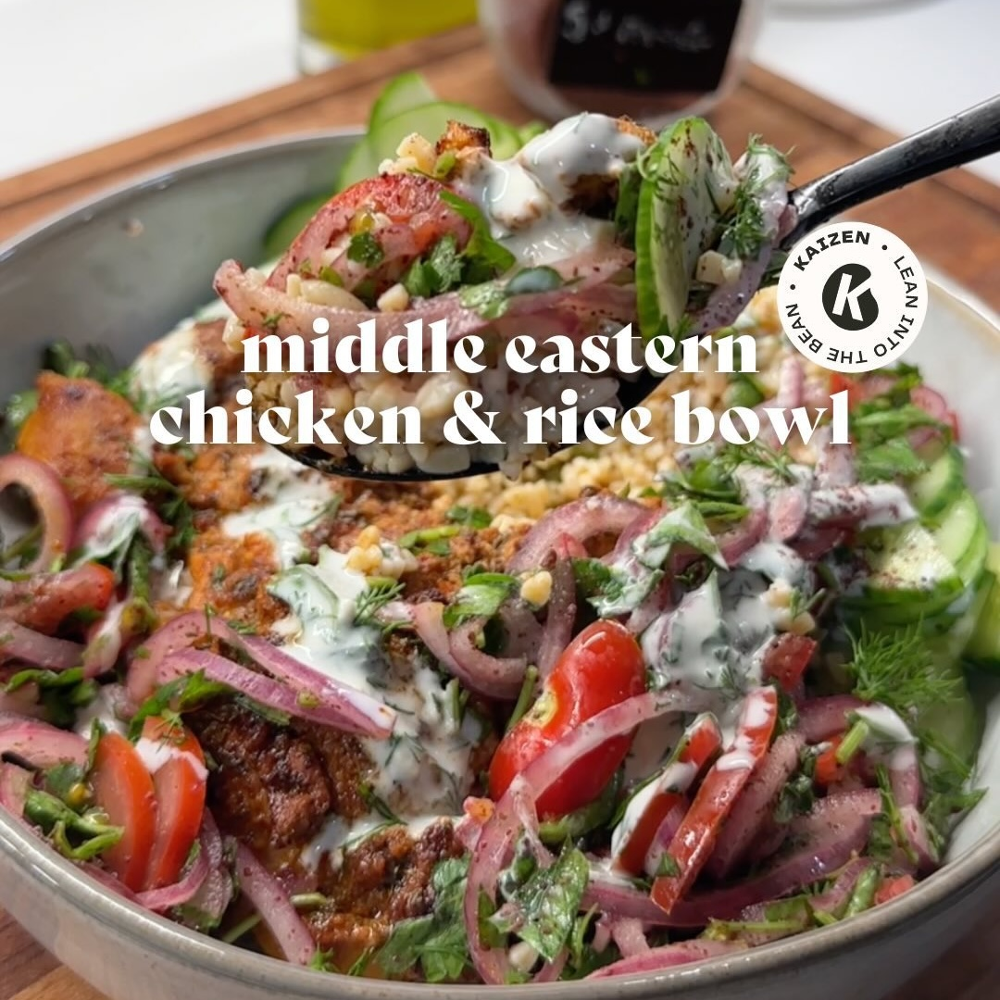

Bowl Arroz con Pollo
Ingredientes:
- 2 lbs de muslos de pollo
- 1.5 cucharadas de aceite de oliva
- 1 cucharada de paprika ahumada
- 1 cucharada de ajo en polvo
- 1 cucharada de tomillo
- 1/2 cucharada de pimiento Aleppo o hojuelas de chile
- 1/2 cucharadita de comino
- 1/4 cucharadita de canela
- Sal
- Pimienta Molida
- 2 cucharadas y 1/4 taza de yogur natural
- Jugo de 2 limones
- 1 cucharada de aceite
- 1 cebolla roja grande
- 1 pequeño puñado de tomates cherry
- 1 gran puñado de perejil fresco
- 2 cucharadas de zumaque
- 3 cucharadas de mayonesa
- 1/8 de taza de jugo de pepinillos
- 2 cucharadas de eneldo fresco
- Arroz, arroz de coliflor, quinoa o lo que prefieras.
Instrucciones:
- Agrega 2 libras de muslos de pollo a un tazón. Rocía con 1.5 cucharadas de aceite de oliva y sazona
con 1 cucharada de paprika ahumada, 1 cucharada de ajo en polvo, 1 cucharada de tomillo, 1/2
cucharada de pimiento Aleppo o hojuelas de chile, 1/2 cucharadita de comino, 1/4 cucharadita de
canela, unas pizcas de sal y pimienta molida, junto con 2 cucharadas de yogur natural y el jugo de 1
limón. Mezcla bien y, de ser posible, deja marinar de 2 a 10 horas; si deseas prepararlo de
inmediato, puedes hacerlo.
- Cuando estés listo para comer, calienta una sartén a fuego medio, añade 1 cucharada de aceite y
agrega el pollo (dejándolo a temperatura ambiente antes de cocinarlo). Cocina a fuego medio; usé una
sartén de hierro fundido y cociné el primer lado durante 4 minutos, lo volteé para otros 4 minutos,
y luego cociné de nuevo 1-2 minutos por cada lado. Esto toma entre 10-12 minutos dependiendo del
grosor del pollo.
- Para la ensalada, corta finamente una cebolla roja grande, un pequeño puñado de tomates cherry y un
gran puñado de perejil fresco. Coloca en un tazón, espolvorea con 2-3 pizcas de sal, 2 cucharadas de
zumaque y el jugo de 1 limón grande. Mezcla bien y deja reposar durante unos 10 minutos, revolviendo
un par de veces.
- Prepara la salsa blanca mezclando 1/4 de taza de yogur natural, 3 cucharadas de mayonesa, 1/8 de
taza de jugo de pepinillos, 2 cucharadas de eneldo fresco, una pequeña pizca de sal y mucha pimienta
recién molida. Mezcla bien, prueba y ajusta.
- Finalmente, prepara tu base. Puedes usar arroz, arroz de coliflor, quinoa o lo que prefieras.
- Cuando el arroz esté listo, coloca una porción en el tazón, agrega algo de pollo, luego añade la
ensalada, algunas rodajas de pepino persa, hierbas frescas y rocía con la salsa blanca.